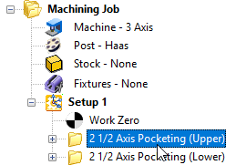

VisualCAM includes powerful Knowledge Base functionality that makes "push button" programming a reality. You can archive an entire machining strategy specific to a certain class of parts in a Knowledge Database (also referred to as a K-Base) and then optionally assign Geometry Selection Rules that are applied automatically when toolpath operations are selected for use from the Knowledge Base.
1.Create and adjust the toolpath operations that you want to include in your knowledge base.
2.Make sure the toolpath has generated cleanly. Each toolpath when generated is listed under a Setup in the Machining Job. If the operation is flagged it means that it needs to be regenerated.
 Note: MILL Module shown, Similar for MILL-TURN, TURN and Profile-NEST |
3.Make sure you have simulated each toolpath and are satisfied with each toolpath operation.
4.Select the operation that you want to save to the Knowledge Base for. You can select multiple operations by pressing the <Ctrl> key while selecting.
 Note: MILL Module shown, Similar for MILL-TURN, TURN and Profile-NEST |
5.Right-click on the selected operation(s) and select Save to Knowledge Base.
 Note: MILL Module shown, Similar for MILL-TURN, TURN and Profile-NEST |
6.The Save As dialog is displayed and automatically navigates to the Defaults folder for VisualCAM. Enter a name for the Knowledge Base file and pick Save (Example: My_Knowledge_Base.vkb)
7.Only one Default Knowledge Base can be loaded at a time. However, you may want to use multiple different Default Knowledge Base files.
To change the Default Knowledge Base select the CAM Preferences icon from the Machining Objects Browser to display the dialog.
 Note: MILL Module shown, Similar for MILL-TURN, TURN and Profile-NEST |
8.Select Machining from the left to display the Machining Preferences.
9.From the Default Parameters section select the Default Knowledge Base to use from the menu. If you have saved different Default Knowledge Base into the Defaults folder, they will be listed here.
10.If you set this to Undefined, the factory defaults are used when creating an operation.